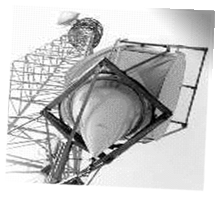

Horn
A horn antenna is used for the transmission and reception of microwave signals. It gets its name from the flared appearance at the end of the antenna. A horn antenna is primarily used for short-range radar systems like those used by law-enforcement to measure speeds of approaching or retreating vehicles.